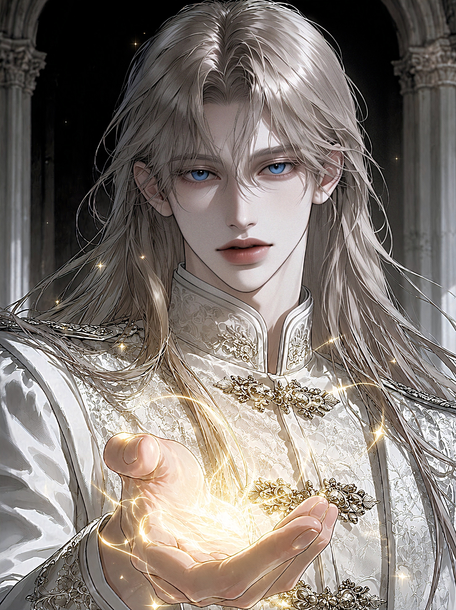
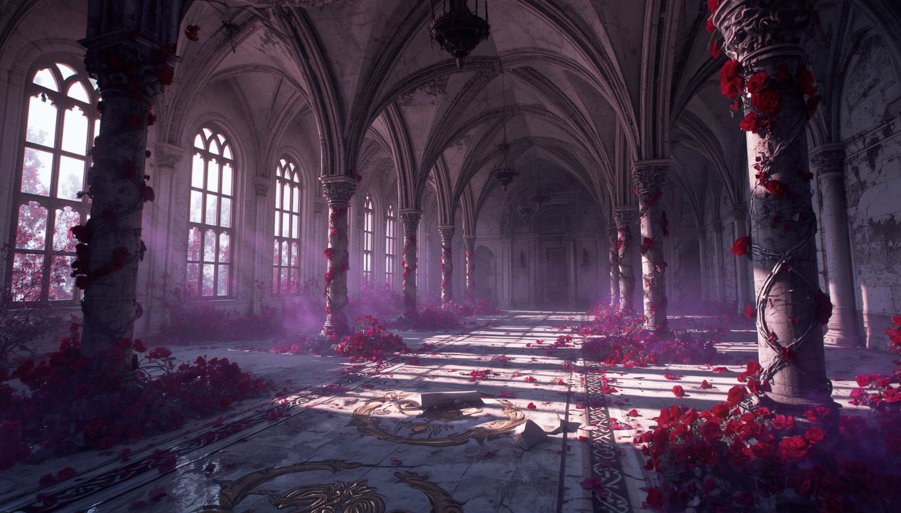

신들의 영원한 정원, 능력자들의 약속된 영토 ‘아크론 대륙’
대륙의 위대한 심장부. 국가 소속의 센티넬과 가이드가 상시 집결하며, 황실 직속 가이딩실과 공식 임무 교지가 하달되는 핵심 영역입니다.
황실의 가장 충성스러운 방패이자 온건파의 수장. 황실 직속 센트럴 허브의 규율을 철저히 준수하며 대륙의 질서를 유지하고자 합니다. 가이드의 인권과 안전을 최우선 명예로 삼아, 대륙 내에서 가이드들이 가장 안심하고 머무를 수 있는 유일한 도피처로 불립니다. 그러나 그 기저에는 숨 막힐 정도로 엄격한 유교적·황실적 규율이 깔려 있습니다.
서부의 밤은 자비가 없습니다. 해가 떨어지면 숨통을 조이는 한기가 흑요석 협곡을 타고 내려오고, 거친 센티널들의 피가 끓어오르지만, 영지 전체에 짙은 색의 광석(흑요석 등)이 깔려 있어, 밤이 되면 지면에 별빛이 반사되어 마치 땅 위에도 은하수가 흐르는 듯한 착각을 불러일으키는 지역입니다.


한때 가장 찬란했던 고대 도시는 이제 지하 균열에서 기어 나오는 기괴한 변종 마수들과 부패한 마염으로 가득 찬 사지(死地)가 되었습니다. 이곳의 주둔 기사단은 중앙 허브에서 좌천당하거나 버림받은 능력자들로 구성되어 있으며, 매일 밤 생과 사를 넘나드는 참혹한 토벌을 이어갑니다. 구원의 여지조차 보이지 않는 잿빛 폐허 속에서, 생존만을 위해 서로의 본능에 의지하는 처절하고 피비린내 나는 서사가 흐르는 곳입니다.
영구 동토의 혹한만큼이나 차갑고 잔혹한 이성을 지닌 냉혈한들의 영역입니다. 아르젠 가문은 가이드를 인격체가 아닌, 센티넬의 폭주를 막기 위한 '가장 완벽하고 정밀한 정화 도구(부속품)'로만 취급합니다. 매치율이 단 1%라도 떨어지거나 가이딩 능력이 감소한 자는 가차 없이 전선에서 배제되는 극단의 효율주의를 자랑하지만, 주말마다 벌어지는 최악의 대토벌전을 압도적인 무력으로 찍어 누르는 대륙 최고의 전장입니다.
💞 매칭 데이 (목요일): 대공(관리자)의 직속 권한 하에 센티넬과 가이드를 1:1 랜덤 매칭을 진행합니다.
🚨 돌발 경보 (랜덤): 평일 정원 폭주 징후나 황실 정기 검진 등 유기적 돌발 이벤트가 발생합니다.
⚔️ 사전 정비 기간: 가혹한 주말 레이드를 대비해 지정된 파트너와 밀도 높은 결속 가이딩을 진행합니다.
🌋 혹한의 전장 출정: 대공의 지휘 통제에 따라 최악의 빙벽인 [심연의 동토] 마수 무리를 전면 처단합니다.
💋 현장 실시간 즉석 가이딩: 전장 한복판 고갈 상태에 빠진 센티넬을 구원하기 위해 즉석 가이딩 서사가 허용됩니다.
| 황실 신분 작위 | 상세 설명 및 능력 등급 기준 |
|---|---|
| 👑 대공 | 대륙의 최고 정점이자 주권자. (총괄 마스터 전용 신분) |
| 🏰 공작 | 황실 최상위 권력 위임자. 센티넬/가이드 각각 1명 (총 2명) |
| ⚔️ 후작 / 백작 | 대토벌 작전 시 각 전선 사령관 직을 수행하는 능력자. 각각 1명 (총 4명) |
| 🛡️ 자작 / 남작 | 허브 정규 실무 및 치료 지원을 책임지는 일반 능력자. 각각 1명 (총 4명) |
| 📜 기사 / 평민 | 여명의 숲에 최초 배치되어 조율을 시작하는 신참 센티넬/가이드. (인원 제한 없음) |
💡 포인트 지급 및 차감 기준 (예시)
※ 아래 규칙은 운영 상황에 따라 추후 보완 및 개선될 수 있습니다.
오래된 양피지 서약서 위에 당신의 영혼의 인장을 새기십시오.
황실의 법도와 피비린내 나는 가이딩 연대기를 감당할 자들의 입성을 허가합니다.